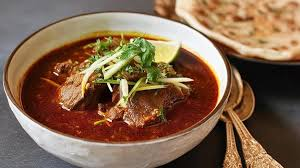
Paye Nihari
Rich slow-cooked meat stew served with hot naan. A must-try breakfast in Rawalpindi.
📍 Bhabra Bazaar, Rawalpindi
View Details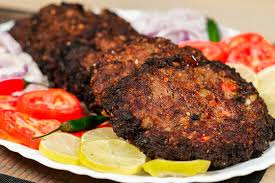
Chapli Kebab
Spicy and crispy minced meat patties, a famous street food near Raja Bazaar.
📍 Raja Bazaar, Rawalpindi
View Details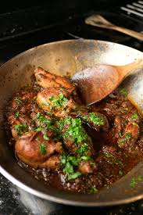
Chicken Karahi
Fresh tomato-based spicy chicken dish cooked in a traditional iron wok.
📍 F-10 Markaz, Islamabad
View Details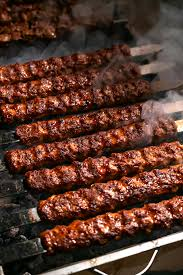
Seekh Kebab
Minced meat skewers grilled over coal fire. Popular at BBQ stalls in Rawalpindi.
📍 Saddar, Rawalpindi
View Details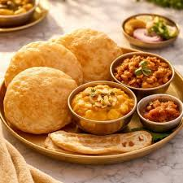
Halwa Puri
Deep-fried bread with sweet semolina halwa and spicy chana. Classic Sunday breakfast.
📍 G-11 Markaz, Islamabad
View Details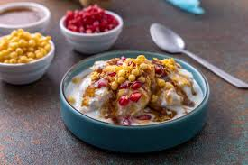
Dahi Bhalle
Soft lentil dumplings topped with yogurt, tamarind chutney and chaat masala.
📍 Bahria Town, Rawalpindi
View Details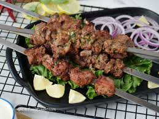
Mutton Boti
Tender marinated mutton pieces grilled on coal. A popular BBQ dish in Islamabad.
📍 F-7 Markaz, Islamabad
View Details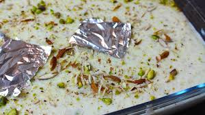
Rabri Kheer
Traditional dessert made with thickened milk and rice. Very popular in the twin cities.
📍 Saddar, Rawalpindi
View Details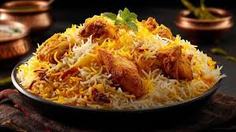
Chicken Biryani
Aromatic rice cooked with spiced chicken, a popular lunch dish across Islamabad.
📍 G-9 Markaz, Islamabad
View Details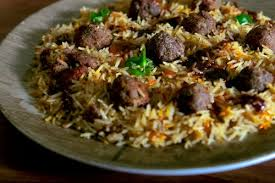
Beef Pulao
Tender beef pieces slow-cooked with fragrant rice, a Rawalpindi dhaba favourite.
📍 Murree Road, Rawalpindi
View Details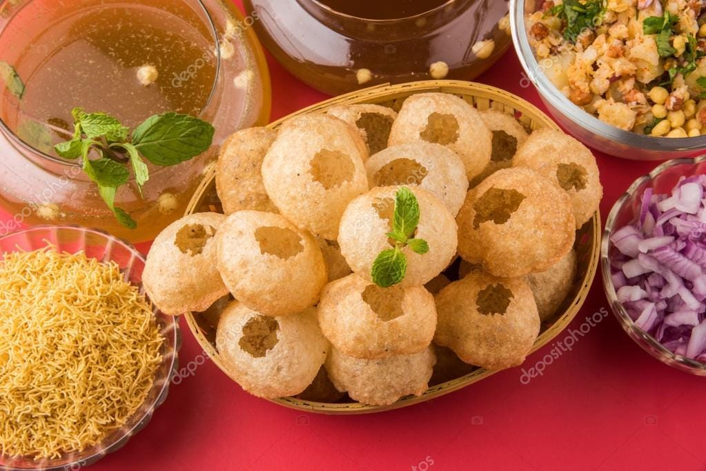
Gol Gappay
Crispy hollow puris filled with spiced water and chickpeas. A favourite street snack.
📍 I-8 Markaz, Islamabad
View Details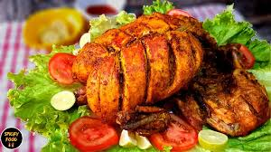
Lahori Chargha
Whole deep-fried chicken marinated in spices. Available at famous dhabas in Rawalpindi.
📍 Murree Road, Rawalpindi
View Details